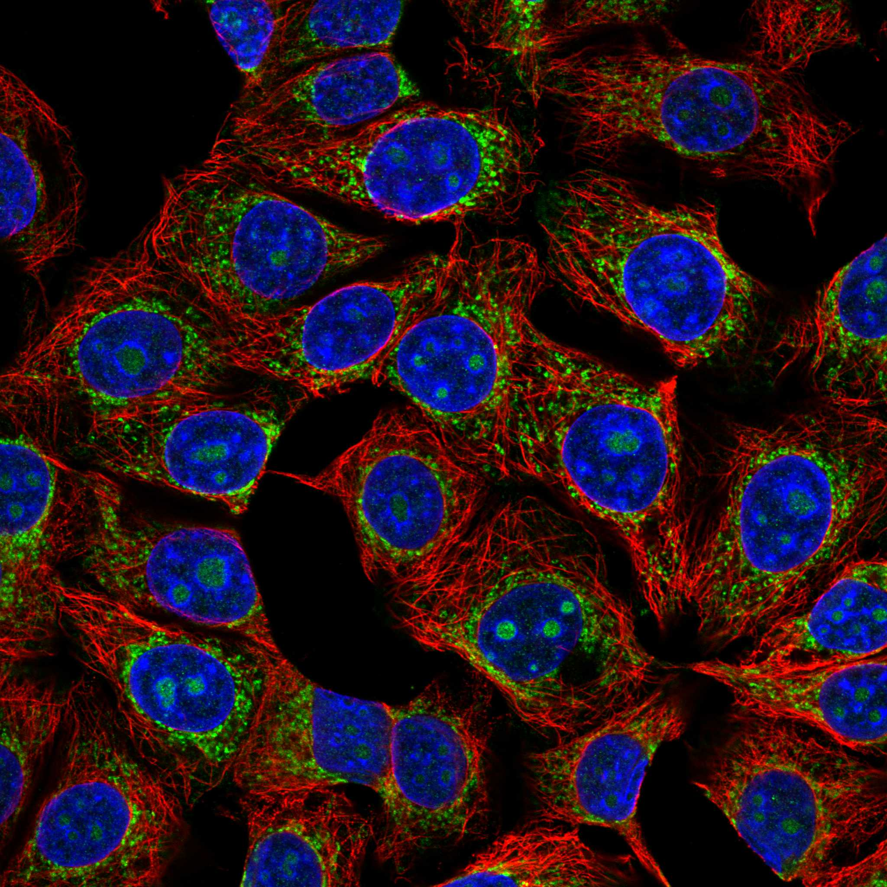
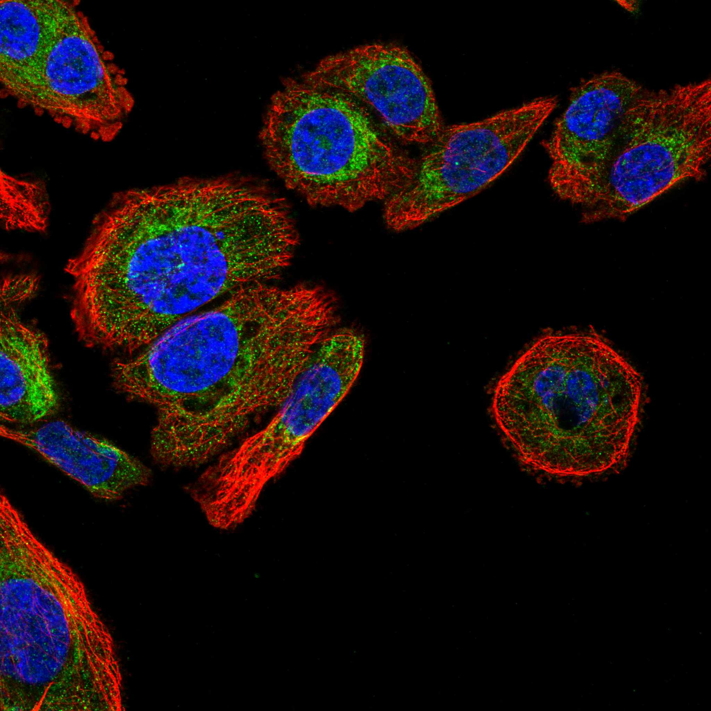
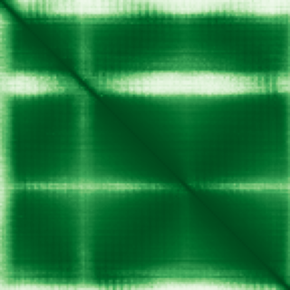

type: protein-evaluation gene: "MIX23" date: 2026-01-30 tags: [protein-scout, nuclear-protein, evaluation] status: scored ---
MIX23 核蛋白评估报告
1. 基本信息
| 项目 | 内容 |
|---|---|
| 基因名 | MIX23 |
| 别名 | CCDC58 |
| 基因全称 | mitochondrial matrix import factor 23 |
| 蛋白名称 | Protein MIX23 |
| 蛋白大小 | 144 aa |
| UniProt ID | Q4VC31 |
| 评估日期 | 2026-01-30 |
2. 评分总览
| 维度 | 得分 | 满分 | 加权后 | 关键证据摘要 |
|---|---|---|---|---|
| Nucleus 核定位特异性 | 8/10 | x4 | 32 | HPA: Nucleoli, Nucleoli fibrillar center, Nucleoplasm |
| Size 蛋白大小 | 8/10 | x1 | 8 | 144 aa |
| Novelty 研究新颖性 | 10/10 | x5 | 50 | PubMed: 8 篇 |
| 3D Structure 三维结构 | 8/10 | x3 | 24 | AlphaFold pLDDT=85.7 |
| Domain 调控结构域 | 7/10 | x2 | 14 | 无已注释染色质调控结构域 |
| PPI Network PPI网络 | 0/10 | x3 | 0 | STRING+IntAct+GO-CC |
| Cross-validation 互证加分 | — | max +3 | +0.0 | — |
| 原始总分 | 128/183 | |||
| 归一化总分 | 69.9/100 |
3. 详细分析
3.1 核定位证据
| 来源 | 定位 | 可信度 |
|---|---|---|
| Protein Atlas (IF) | PC-3, MCF-7 | HPA validated |
| UniProt | Nucleus | — |
| GO-CC | GO:0005634 Nucleus (IEA) | — |
IF 图像:  
3.2 蛋白大小评估
144 aa，小型蛋白，实验操作便利
3.3 研究现状
| 指标 | 数值 |
|---|---|
| PubMed 总数 | 8 篇 |
| 最早发表年份 | 2025 |
主要研究方向:
- 功能研究尚不充分，属新颖蛋白
关键文献: 1. Fattahi Z et al. (2025). "Improved Diagnostic Yield in Recessive Intellectual Disability Utilizing Systematic Whole Exome Sequencing Data Reanalysis.". *Clin Genet*. PMID: 39748273 2. de Mello FDSB et al. (2022). "Genetic mapping of a bioethanol yeast strain reveals new targets for hydroxymethylfurfural- and thermotolerance.". *Microbiol Res*. PMID: 35931002 3. Zöller E et al. (2020). "The intermembrane space protein Mix23 is a novel stress-induced mitochondrial import factor.". *J Biol Chem*. PMID: 32826315 4. Silva EN et al. (2025). "Identification and functional annotation of candidate genes and transcription factors associated with reproductive traits to Nelore bulls: new insights from GWAS and post-GWAS analysis.". *Trop Anim Health Prod*. PMID: 40711514
评价: PubMed 8 篇，属极度新颖蛋白，研究空间充足。
关键文献: 1. Fattahi Z et al. (2025). "Improved Diagnostic Yield in Recessive Intellectual Disability Utilizing Systematic Whole Exome Sequencing Data Reanalysis". *Clin Genet*. PMID: 39748273 2. de Mello FDSB et al. (2022). "Genetic mapping of a bioethanol yeast strain reveals new targets for hydroxymethylfurfural- and thermotolerance". *Microbiol Res*. PMID: 35931002 3. Zöller E et al. (2020). "The intermembrane space protein Mix23 is a novel stress-induced mitochondrial import factor". *J Biol Chem*. PMID: 32826315 4. Silva EN et al. (2025). "Identification and functional annotation of candidate genes and transcription factors associated with reproductive traits to Nelore bulls: new insights from GWAS and post-GWAS analysis". *Trop Anim Health Prod*. PMID: 40711514
3.4 三维结构分析
| 指标 | 数值 |
|---|---|
| AlphaFold 平均 pLDDT | 85.7 |
| pLDDT > 90 占比 | 59.7% |
| pLDDT 70-90 占比 | 25.7% |
| pLDDT 50-70 占比 | 9.0% |
| pLDDT < 50 占比 | 5.6% |
| 可用 PDB 条目 | 0 |
PAE 图: 
评价: AlphaFold 预测高质量，整体折叠良好 (AlphaFold v6, pLDDT=85.7, >90=60%, 70-90=26%, 50-70=9%, <50=6%)
3.5 结构域分析
| 来源 | 结构域 |
|---|---|
| UniProt | — |
染色质调控潜力分析: 无已注释染色质调控结构域
3.6 PPI 网络
实验验证互作 (IntAct, physical association):
| Partner | 方法 | PMID | 功能类别 | 调控相关？ | |||||||||||||||
|---|---|---|---|---|---|---|---|---|---|---|---|---|---|---|---|---|---|---|---|
| intact:EBI-307369 | uniprotkb:Q3KR43 | uniprotkb:Q5JTS6 | uniprotkb:D3DT78 | ensembl:ENSP00000464030.1 | uniprotkb:Q3B754 | MI:0006(anti bait coimmunoprecipita | PMID:pubmed:17353931 | — | — | ||||||||||
| intact:EBI-8632 | uniprotkb:D6W0Y1 | MI:0676(tandem affinity purificatio | PMID:pubmed:19536198 | — | — | ||||||||||||||
| intact:EBI-6570698 | uniprotkb:B2R5G6 | ensembl:ENSP00000326052.2 | ensembl:ENSP00000446524.1 | ensembl:ENSP00000447776.1 | ensembl:ENSP00000450331.1 | MI:1314(proximity-dependent biotin | PMID:pubmed:29568061 | imex:IM-26301 | — | — | |||||||||
| intact:EBI-356440 | uniprotkb:Q5JUZ7 | uniprotkb:Q6I9X6 | uniprotkb:Q9Y3I3 | uniprotkb:Q9Y3I4 | uniprotkb:A4QPB4 | uniprotkb:B1ALN1 | uniprotkb:B2RB08 | intact:EBI-2561858 | uniprotkb:D3DTE9 | uniprotkb:Q1L6K6 | uniprotkb:Q2QKE4 | uniprotkb:Q1L6K4 | ensembl:ENSP00000287295.3 | uniprotkb:E9PRR0 | MI:1314(proximity-dependent biotin | PMID:pubmed:29568061 | imex:IM-26301 | — | — |
| intact:EBI-1056574 | uniprotkb:B2R4J2 | uniprotkb:D3DUM7 | uniprotkb:Q6P666 | ensembl:ENSP00000253452.2 | ensembl:ENSP00000457015.1 | ensembl:ENSP00000457513.1 | MI:1314(proximity-dependent biotin | PMID:pubmed:29568061 | imex:IM-26301 | — | — | ||||||||
STRING 预测互作 (combined score >0.4):
| Partner | Score | 功能类别 | 调控相关？ |
|---|---|---|---|
| — | — | — | — |
已知复合体成员 (GO Cellular Component):
- 暂无 GO-CC 复合体注释
PPI 互证分析:
- STRING + IntAct 共同确认: 0
- 仅 STRING 预测: 0
- 仅 IntAct 实验: 9
- 调控相关比例: 0/0 (0%)
评价: PPI 得分 0/10。
3.7 多库互证
| 维度 | 来源 | 结果 | 是否一致 |
|---|---|---|---|
| 三维结构 | AlphaFold + PDB | pLDDT=85.7, PDB=0 | — |
| 结构域 | UniProt/InterPro | 无注释域 | — |
| PPI | STRING + IntAct + GO-CC | 0/9/0 条目 | — |
| 定位 | HPA/UniProt/GO | Nucleoli, Nucleoli fibrillar center, Nucleoplasm / Nucleus / GO:0005634 | 一致 |
互证加分明细:
- 无额外互证加分
总分: +0.0 / max +3
4. 总体评价
推荐等级: ★★ (3/5)
核心优势: 1. 极度新颖 (PubMed 8 篇)，几乎未被研究 2. HPA 确认核定位，高置信度
风险/不确定性: 1. AlphaFold 结构预测置信度较高 2. PPI 数据稀缺，功能网络尚不清晰
下一步建议:
- [ ] 通过 IF 实验验证内源核定位
- [ ] 构建表达载体进行功能研究
- [ ] Co-IP/MS 鉴定互作蛋白
5. 数据来源
- GeneCards: https://www.genecards.org/cgi-bin/carddisp.pl?gene=MIX23
- Protein Atlas: https://www.proteinatlas.org/MIX23
- PubMed: https://pubmed.ncbi.nlm.nih.gov/?term=MIX23
- UniProt: https://www.uniprot.org/uniprotkb/Q4VC31
- SMART: http://smart.embl.de/
- STRING: https://string-db.org/
- IntAct: https://www.ebi.ac.uk/intact/
- AlphaFold: https://alphafold.ebi.ac.uk/entry/Q4VC31
PPI 网络（三源综合）
| Partner | Source | Score/Evidence |
|---|---|---|
| 无记录 | — | — |
IntAct 有限记录。无 BioGrid 补充数据。
PAE 图像已获取。结构判断基于 AlphaFold pLDDT 统计。
<!-- DOMAIN_HUMANPPI_REPAIR_START -->
Domain/SMART 与 humanPPI 补充（2026-06-07）
SMART / UniProt domain
| Source | Data |
|---|---|
| UniProt | Q4VC31 |
| SMART | 未在 UniProt xref 中检出 SMART 条目 |
| UniProt Domain [FT] | 未检出显式 UniProt Domain feature |
| InterPro | IPR019171; |
| Pfam | PF09774; |
humanPPI / HPA Interaction
Source: https://www.proteinatlas.org/ENSG00000160124-MIX23/interaction
| Partner | Datasets | AF3/HPA structure |
|---|---|---|
| AIFM1 | Biogrid | false |
| COX4I1 | Biogrid | false |
| SART1 | Biogrid | false |
| SFXN1 | Biogrid | false |
| SMIM12 | Biogrid | false |
<!-- DOMAIN_HUMANPPI_REPAIR_END -->